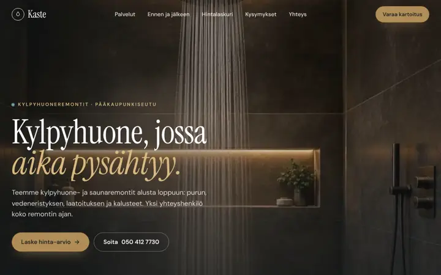
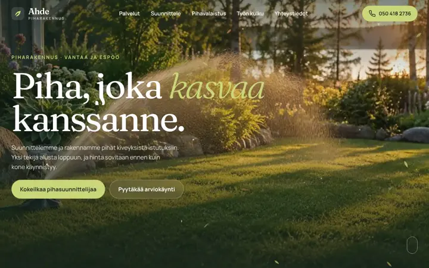

Kotisivut yritykselle, koko Suomeen.
Teemme kotisivut pienille yrityksille kaikkialle Suomeen etänä. Yksi sivu maksaa 490 € ja enintään viisi sivua 990 €. Hinta on kertamaksu, ja laskutamme vasta, kun sivut ovat valmiit.
Kaksi hintaa, ei yllätyksiä.
Kaikki, mitä asiakas kysyy, yhdellä sivulla: palvelut, hinnat, aukioloajat, reitti ja yhteydenotto.
Enintään viisi sivua, esimerkiksi oma sivu jokaiselle palvelulle. Rakenteinen tieto mukana.
- Laskutamme vasta, kun sivut ovat valmiit ja olette hyväksyneet ne.
- Sivut tehdään ensin puhelimelle, koska siellä asiakkaanne niitä etsivät.
- Google-perusteet, tietosuojaseloste ja yhteydenottotavat kuuluvat hintaan.
- Sivujen ylläpito 20 €/kk on valinnainen, eikä siinä ole määräaikaa.
- Verkkotunnus rekisteröidään yrityksenne nimiin, vaikka me hoidamme ylläpidon.
Hintoihin ei lisätä arvonlisäveroa, koska Marktic ei ole toistaiseksi arvonlisäverovelvollinen. Kaikki palvelut ja hinnat
Kolme tapaa saada kotisivut.
Jokainen sopii jollekin. Tässä niiden erot rehellisesti.
Itse kotisivukoneella
Edullisin tapa, jos teillä on aikaa. Kuukausimaksu on pieni, mutta tekstit, kuvat, puhelinversio ja hakukoneasetukset jäävät teidän tehtäviksenne.
Kuukausimaksullinen palvelu
Ei isoa aloituslaskua, ja ylläpito kuuluu hintaan. Maksatte kuitenkin niin kauan kuin sivut ovat päällä, ja joissakin sopimuksissa on määräaika.
Tekijä kertamaksulla
Sivut tehdään teille valmiiksi ja maksetaan kerran. Meillä 490 € tai 990 €, ja ylläpito 20 €/kk on valinnainen. Näin me teemme.
Mitä hyvillä kotisivuilla on.
- Mitä teette, missä ja mitä se maksaa, heti ensimmäisellä näytöllä.
- Soitto- tai yhteydenottopainike, joka toimii yhdellä painalluksella puhelimessa.
- Palvelualue kirjoitettuna: kaupunki, kaupunginosat ja naapurikunnat.
- Nopea lataus myös heikolla mobiiliyhteydellä.
- Rakenteinen tieto, josta Google ymmärtää yrityksen nimen, alan ja alueen.
- Tietosuojaseloste ja ajantasaiset aukioloajat.
Nämä kuuluvat kaikkiin tekemiimme kotisivuihin. Emme lupaa tiettyä sijaa hakutuloksissa, koska tulokset vaihtelevat.
Esimerkkejä eri aloille.
Kuvitteellisten yritysten sivuja kuudelle alalle. Avatkaa sivu puhelimella, niin näette, mitä asiakkaanne näkee.
 PutkityötLVI Nurmikuvitteellinen yritys
PutkityötLVI Nurmikuvitteellinen yritys
 Leipomo ja kahvilaLeipomokahvila Kaarnakuvitteellinen yritys
Leipomo ja kahvilaLeipomokahvila Kaarnakuvitteellinen yritys
 KauneushoitolaSiro Studiokuvitteellinen yritys
KauneushoitolaSiro Studiokuvitteellinen yritys

KylpyhuoneremontitKaste Kylpyhuoneetkuvitteellinen yritys
PiharakentaminenAhde Piharakennuskuvitteellinen yritys SähköasennuksetSävy Sähkökuvitteellinen yritys
SähköasennuksetSävy Sähkökuvitteellinen yritysKolme vaihetta, kaikki etänä.
- 1
Lähetätte yrityksen nimen ja paikkakunnan. Saatte maksuttoman kartoituksen ja tarjouksen kahden arkipäivän kuluessa.
- 2
Teemme sivut ja lähetämme teille esikatselulinkin. Muutokset tehdään ennen julkaisua, eikä kenenkään tarvitse matkustaa.
- 3
Kun hyväksytte sivut, julkaisemme ne ja laskutamme. Ennen sitä ette maksa mitään.
Kotisivut omalle alallenne.
Jokaisella alasivulla kerromme, mitä juuri sen alan yrityksen sivuilla pitää olla, ja näytämme esimerkkisivun.
Kotisivut omaan kaupunkiinne.
Jokaisella kaupunkisivulla kerromme, mitä juuri sen alueen yrityksen sivuilla kannattaa näkyä.
Usein kysyttyä.
Paljonko maksaa kotisivujen teko?
Hinnat vaihtelevat paljon. Kotisivukoneella sivut voi tehdä itse pienellä kuukausimaksulla. Kuukausimaksullisissa palveluissa maksatte niin kauan kuin sivut ovat päällä. Tekijän tekemät sivut maksavat kertamaksuna yleensä muutamasta sadasta eurosta useisiin tuhansiin. Meillä yksi sivu maksaa 490 € ja enintään viisi sivua 990 €.
Miksi yritys tarvitsee kotisivut?
Ennen yhteydenottoa asiakas tarkistaa yleensä hinnat, palvelualueen ja yhteystiedot. Google-yritysprofiili ja some kertovat osan, mutta kotisivujen sisällöstä päätätte kokonaan itse, ja verkkotunnus on yrityksenne nimissä. Sivut ovat teidän.
Kertamaksu vai kuukausimaksu?
Kuukausimaksu on alussa pienempi, mutta sitä maksetaan niin kauan kuin sivut ovat päällä. Meillä sivut maksetaan kerran, ja ylläpito 20 €/kk on valinnainen ilman määräaikaa.
Voiko kotisivut tehdä itse?
Voi. Kotisivukoneella se onnistuu, jos aikaa ja kiinnostusta on. Tekijä kannattaa valita, jos haluatte sivujen toimivan puhelimessa ja hakukoneissa ilman, että teidän tarvitsee opetella sitä itse.
Teettekö kotisivuja koko Suomeen?
Teemme. Kotipaikkamme on Vantaa, ja työ tehdään etänä, joten paikkakunnalla ei ole väliä. Näette sivut esikatselulinkistä ennen julkaisua.
Ovatko esimerkkisivujen yritykset oikeita?
Eivät ole. Ne ovat kuvitteellisia yrityksiä, joiden sivuilla näytämme, millaisia sivuja teemme eri aloille. Marktic on uusi toimisto, ja ensimmäiset asiakkaat saavat halutessaan paikan esimerkkien joukossa.
Lähettäkää yrityksenne nimi ja paikkakunta.
info@marktic.fiVastaamme kahden arkipäivän kuluessa. Kartoitus on maksuton eikä sido mihinkään.